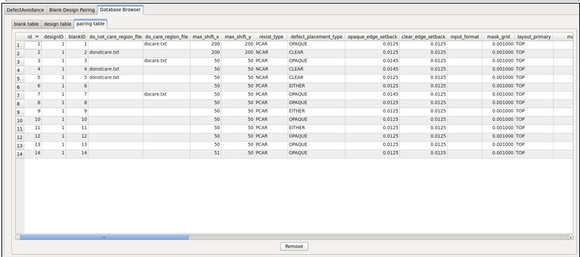

The Database
Browser provides views of blanks, designs, and their current pairings
as established in the blank-design relational database.
Prerequisites
Calibre MDPDefectAvoidance has made a successful
defect avoidance run.
A
valid Blank-Design database must be selected and loaded into Calibre MDPDefectAvoidance
(see “Blank-Design Relational Database”).
Procedure
- Invoke Calibre MDPDefectAvoidance
from Calibre MDPview (see “Calibre MDPDefectAvoidance Modes of Operation”).
- In the Calibre MDPDefectAvoidance
dialog box, click the Database Browser tab. There
are three sub-tabs, blank table , design
table, and pairing table.
blank table (see Figure 1) — Displays a list of
blanks from the primary database, including blank name, blank file
name, format, and a status column indicating whether the blank is
available unavailable or used. As shown in the figure, the status column
can be edited after a double-click.
Figure 1. Blank
Table View
design table (see Figure 2) — Displays a list of
designs from the primary database, including mask data name, data
file name, format, and a status column indicating whether the design
is available, unavailable or used. As shown in the figure, the status
column can be edited after a double-click.
Figure 2. Design
Table View
Pairing (see Figure 3) — Displays the current
blank-design pairings as listed in the primary database.
Figure 3. Pairing
Table View
Table 1 illustrates the different functionality
supported for each Database Browser table.
Table 1. Database Browser FunctionalityColumn
|
Blank
|
Design
|
Pairing
|
Comments
|
|---|
Sorting
|
Yes
|
Yes
|
Yes
|
Sorting on all columns.
|
Column(s) Editing
|
Yes
|
Yes
|
No
|
Editable columns are represented
with a cyan background.
|
Editable Column Names
|
status
|
status
|
NA
|
Can be set to Used, Available,
or Unavailable.
|
Row(s) Deletion
|
Yes
|
Yes
|
Yes
|
|
The state of a blank or design
can be set in the status column of a corresponding blank or design
tables using the Database Browser. If set to Available, the blank
is available for pairing. If set to Unavailable, that blank is not
available for pairing. If set to Used, the blank is already used
and cannot be paired with any design.
For details on blank, design
and pairing table columns, refer to “Blank-Design Relational Database”.